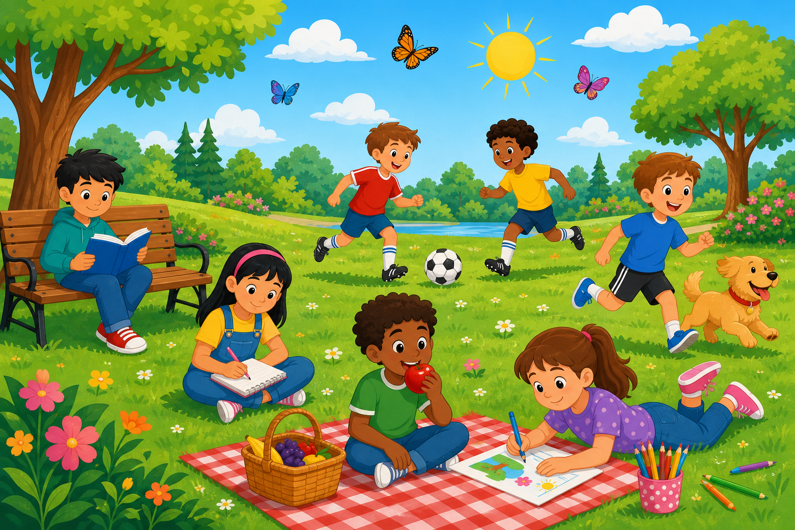

English grammar דקדוק אנגלי
Practice
Five practice sections. Read the instructions, then complete each activity.
תרגול
חמישה חלקי תרגול. קראו את ההוראות והשלימו כל פעילות.
LIVE

You are a TV reporter. Look at the picture. Report what is happening now. Write 4 sentences in the Present Progressive.